구조물 편집기를 맵 타일 편집기 수준으로
2026-08-30 · 브랜치 구조물2 · 크로미움 실측
1 크기만의 문제가 아니었다
"50% 더 크게"를 하려고 창을 재 봤더니 크기 말고 두 가지가 더 망가져 있었다.
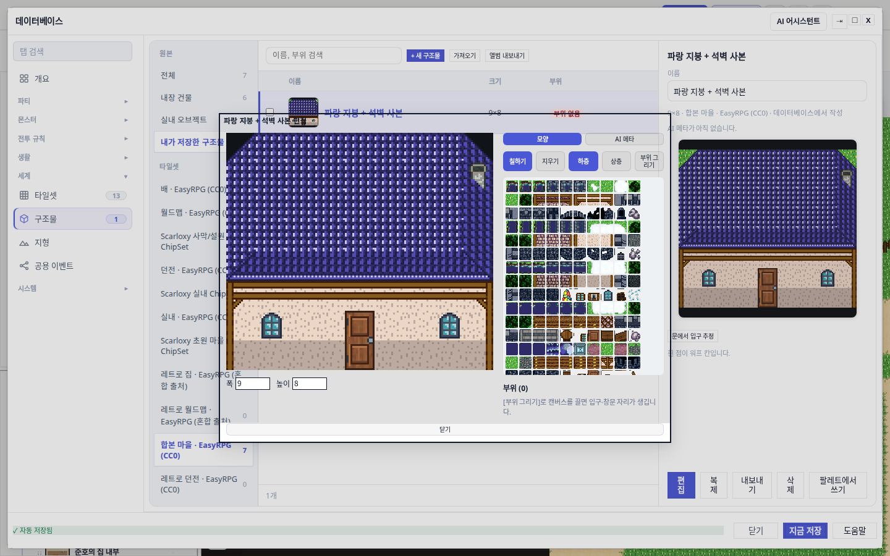
결함 ① 창 배경이 투명했다 — 정의되지 않은 CSS 토큰
.db-enemy-dialog 는 background: var(--oprn-chrome) / border-color: var(--oprn-light) 를 쓴다. 그 토큰은 저장소 어디에도 정의돼 있지 않다. --oprn-* 60개 중 23개가 그렇다.
왜 아무도 몰랐나
대체값(fallback)이 없는 미정의 커스텀 프로퍼티는 계산값 시점에 선언 자체를 무효로 만든다. 그러면 background 가 초기값 transparent 로 떨어진다. 콘솔 경고도, devtools 취소선도 남지 않는다. 소스 CSS 만 읽으면 "배경 있음"으로 보인다.
실존 토큰(--bg-overlay / --border-default, 헤더는 --accent 그라디언트)으로 바꿨다. 실측 getComputedStyle(...).backgroundColor 가 rgba(0, 0, 0, 0) → rgb(255, 255, 255). 남은 20개는 상태·배우·적 표 소관이라 이번 범위에서 뺐다.
결함 ② 창이 내용 크기로 잡혀 있었다
허용된 자리는 1424×884 인데 실제로는 732×537 이었다. [data-testid="structure-kit-editor"] > .db-enemy-dialog 에 width: min(1424px, calc(100vw - 16px)) 와 같은 꼴의 높이를 준다. DB 모달(z 900)과 편집기 백드롭(z 1200)이 별개 층이라 DB 모달 크기 불변식을 건드리지 않고 독립적으로 커진다.
결함 ③ 한 칸 칠할 때마다 따로 클릭해야 했다
pointermove 리스너가 아예 없었다. 9×8 킷 한 채를 다시 칠하려면 클릭 72번이다.
2 고친 뒤
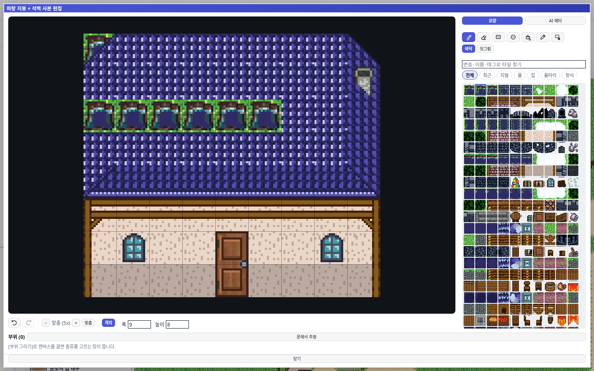
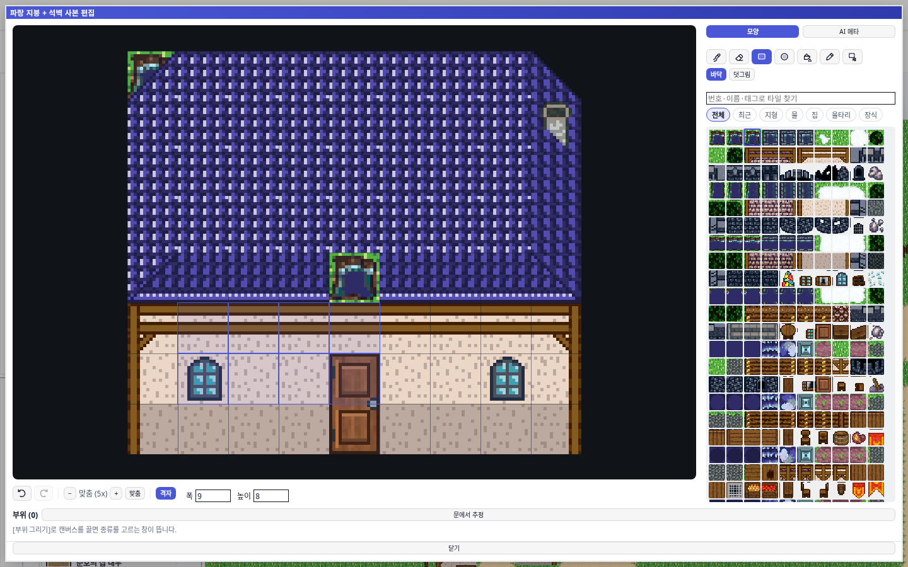
tileCellsForPaintShape.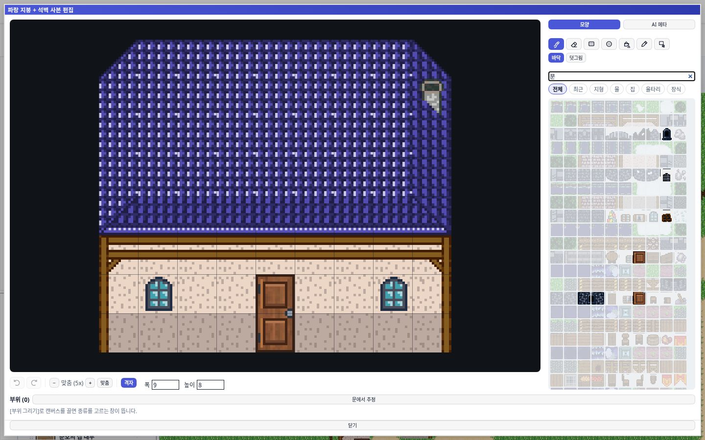
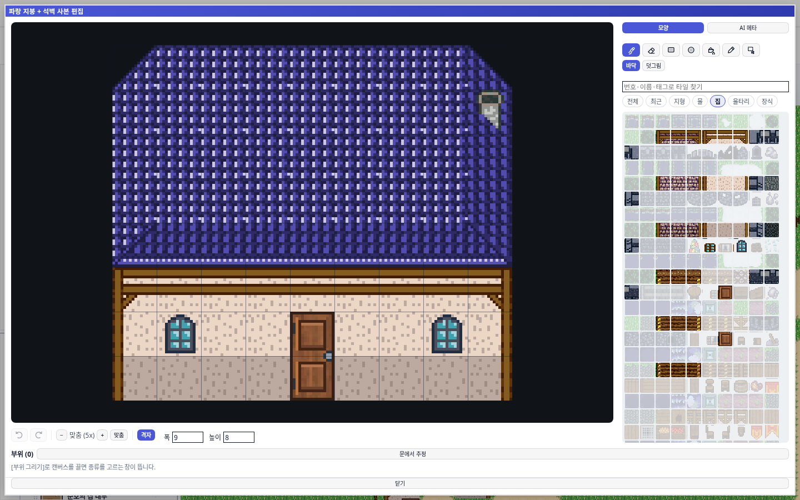
tilePaletteFilter.ts)을 쓴다. 복사하지 않은 이유는 §4 에 적었다.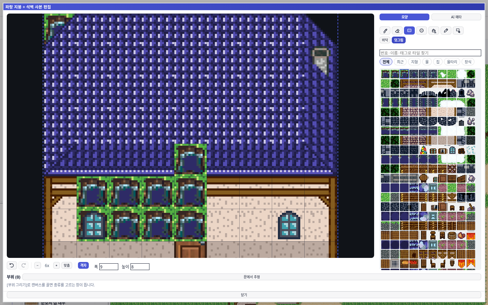
layer-upper 클래스를 붙였지만 그 클래스에 CSS 정의가 아예 없어서 시각 신호가 0 이었다(죽은 클래스).3 좁은 화면과 긴 킷
창을 화면 거의 꽉 채우는 결정이라 작은 화면에서 무엇이 접히는지가 실제 위험이다.
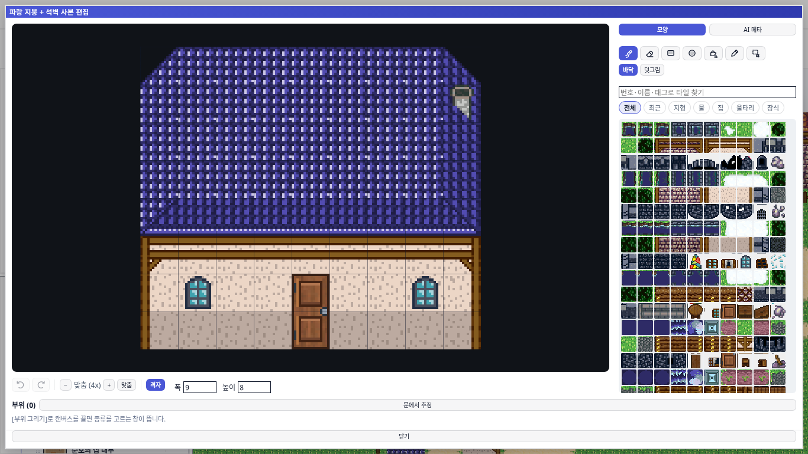
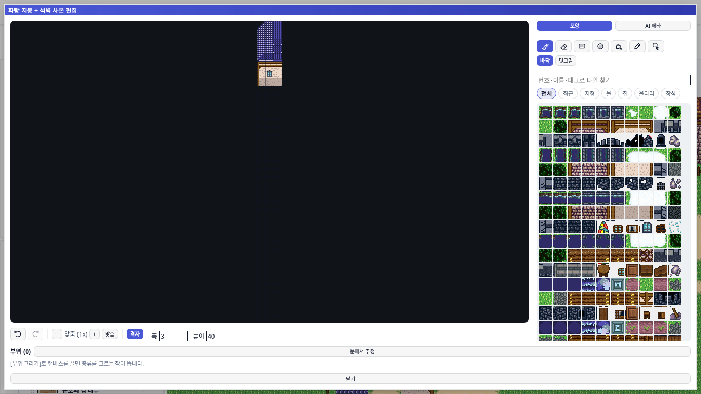
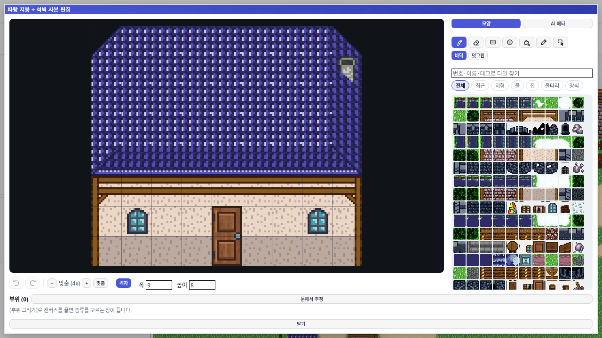
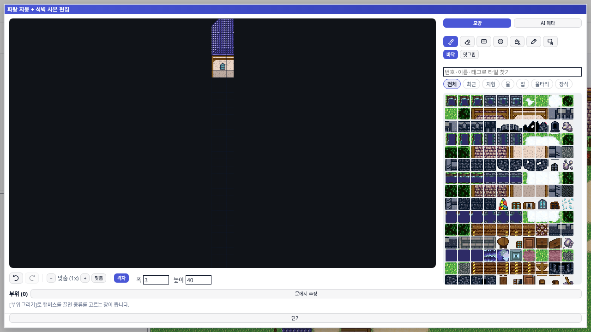
스크롤이 생겼다고 다 닿는 건 아니다
place-content: center 인 스크롤 칸에서 자식이 칸보다 크면 위·왼쪽으로 넘친 부분은 스크롤로 닿지 않는다. 스크롤 원점이 콘텐츠 박스 시작이라서다. 200×100 칸에 300px 자식으로 실측:
| 정렬 | scrollHeight | scrollTop=0 에서 자식 위 여백 | 판정 |
|---|---|---|---|
center | 200 (100px 유실) | −99px (칸 위에 박혀 있음) | 첫 줄 영구 은폐 |
safe center | 300 | +1px | 전부 도달 |
safe 는 잘림이 생길 때만 시작 정렬로 물러난다 — 들어맞을 때는 그대로 가운데다. 3×40 킷 실측: scrollHeight 640(=40×16), 닿을 수 없는 위쪽 0px, 1366×768 과 1280×720 둘 다.
4 "맵 편집기를 그대로 가져다 쓰면 되지 않나" — 절반만
사용자가 물은 지점이다. 답은 경계가 있고, 그 경계는 렌더러다.
| 맵 편집기의 것 | 재사용 | 왜 |
|---|---|---|
| 칠하기 엔진 · 격자 · 줌 | 불가 | 맵은 Phaser 씬(EditScene), 구조물은 DOM <canvas>. 좌표계·렌더 루프·입력 경로가 공유되지 않는다. |
도형 계산 tileCellsForPaintShape | 그대로 | 순수 함수. 사각형·타원이 맵과 같은 모양으로 나온다. |
SVG 아이콘 makeSvgIcon | 그대로 | 유니코드 글리프(✏ ⌫ ⌖ ▨)는 폰트에 따라 뭉개져 무슨 도구인지 알 수 없었다. |
도구막대 makeTileToolbar | 금지 | installToolbarBadgeRefresh 가 latestToolbarRerender 모듈 전역을 마지막 호출자로 덮어쓴다 — 편집기를 열면 맵 도구막대의 자동 갱신이 이쪽으로 샌다. |
팔레트 격자 makeGridPalette | 부적합 | ① 칸 크기가 컨테이너 쿼리(--chipset-cell: 100cqi)에 묶여 좌패널 밖에서는 컨테이너를 새로 세워야 한다. ② 오토타일을 대표 1칸으로 접고 레이어로 걸러 480칸 중 일부가 사라진다 — 구조물은 지붕 변형 같은 세부 타일이 필요하다. |
| 검색 · 분류 규칙 | 파일로 추출 | 원래 tilePalette.ts 의 비공개 함수였고 모듈 전역 3개를 직접 읽었다 — 그대로 부르면 맵 팔레트의 필터가 편집기와 함께 움직인다. 상태는 호출부가 들고 tilePaletteFilter.ts 는 순수 계산만 한다. |
되돌리기 recordProjectSnapshot | 부적합 | 스트로크마다 프로젝트 전체를 structuredClone 하고, DB 모달 취소가 그 이력을 통째로 지운다. 킷 단위 스택(80단)으로 대신했다. |
규칙을 복사하지 않은 이유
이 저장소에는 이미 타일 칠하기 구현이 셋 있다 — Phaser 맵, 구조물 편집기, tilesetAiTerrainExample.ts. 같은 분류 판단을 또 복제하면 넷째 사본이 되고, 나중에 어느 쪽이 정본인지 알 수 없게 된다.
5 이름이 거짓말을 하면 테스트가 눈을 감는다
이번 작업에서 가장 값비쌌던 회귀. e2e 가 빨갛게 알려줬지만 원인은 "부위 기능이 깨졌다"가 아니었다.
structure-kit-editor-canvas 라는 testid 가 실제 <canvas> 가 아니라 그것을 담는 스크롤 칸에 붙어 있었다. 포인터 리스너가 거기 있어서 자연스럽게 그렇게 됐다.
| testid 요소 상자 | 실제 캔버스 | 모서리 클릭(+8px) | |
|---|---|---|---|
| 전 | 1084 × 721 (스크롤 칸) | 384 × 384 @ (370, 209) | (28, 48) → 캔버스 밖 → 무음 무반응 |
| 후 | 384 × 384 @ (370, 209) | 384 × 384 @ (370, 209) | (378, 217) → 칸 (0, 0) |
스크롤 칸은 내용을 가운데 정렬하므로 "캔버스 모서리"라고 믿고 끈 좌표가 실제로는 캔버스 밖 여백이었고, cellFromEvent 가 null 을 돌려 부위 드래그가 조용히 아무것도 하지 않았다. 부위 개수 0 이라 폴백조차 돌지 않은 것이 단서였다.
고침은 testid 와 포인터 리스너를 스테이지(캔버스와 픽셀 단위로 같은 상자)로 함께 옮기는 것이다. 그러면 이벤트 대상과 기하가 같은 요소가 되어 같은 함정이 다시 생기지 않는다. 유닛 테스트는 그 testid 로 이벤트를 직접 던지므로 테스트 변경이 한 줄도 없다.
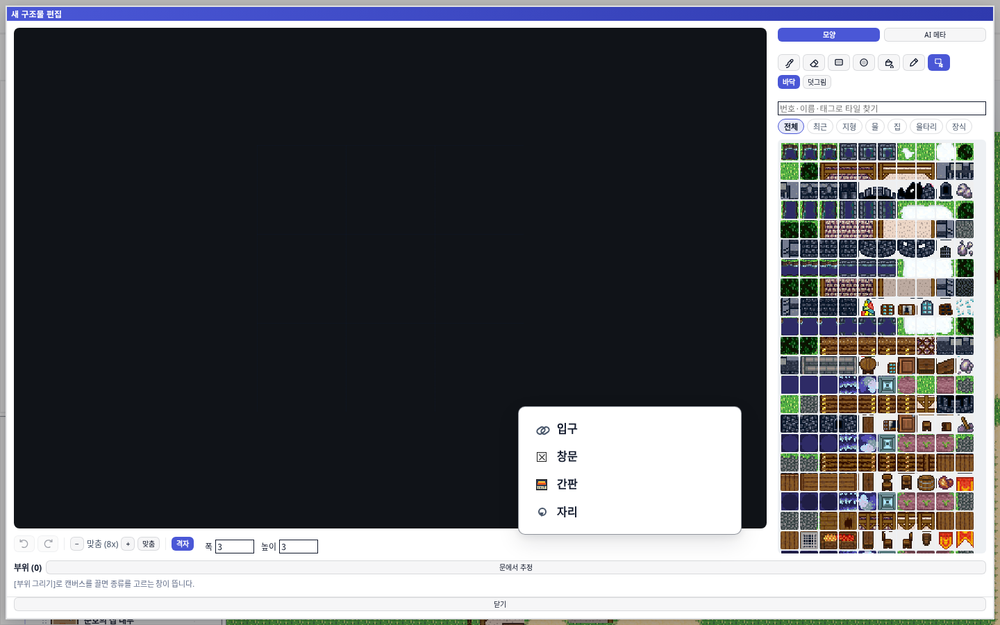
종류창: true, 고르기 전 부위 개수 0.여기서 얻은 규칙
- testid 이름이
...-canvas면 그 요소의boundingBox()가 캔버스여야 한다. 아니면 좌표로 판정하는 테스트가 전부 칸 밖을 짚는다. - 이벤트 대상과 기하 기준을 같은 요소로 모아라. 갈라지면 어느 쪽이 옳은지 코드만 보고는 알 수 없다.
- 실패가 "기능 없음"으로 보일 때 폴백 경로가 돌았는지 보라. 폴백도 안 돌았다면 원인은 그 기능이 아니라 그보다 앞이다.
6 실측 요약
| 항목 | 전 | 후 | 배수 |
|---|---|---|---|
| 창 | 732 × 537 | 1424 × 884 | 면적 4.0배 |
| 창 배경 | rgba(0,0,0,0) (뒤가 뚫림) | rgb(255,255,255) | — |
| 캔버스 | 432 × 384 (3배) | 720 × 640 (5배) | 2.8배 |
| 팔레트 | 260 × 320, 20px 칸 | 300 × 596, 26px 칸 | 2.1배 |
| 팔레트 칸 수 | 480 | 480 (전부 유지) | — |
| 도구 | 글자 5개 (2줄로 접힘) | SVG 아이콘 7개 (1줄) | — |
| 칠하기 | 클릭 1번 = 1칸 | 드래그 1번 = 6칸 | — |
| 되돌리기 | 없음 | 80단 + Ctrl+Z / Ctrl+Shift+Z | — |
| 격자 · 확대 | 둘 다 없음 | 토글 + 1·2·3·4·6·8x / 맞춤 | — |
| 검색 · 분류 | 없음 | "문" 9칸 / "집" 75칸 | — |
| 창 밖 삐짐 | — | 0개 (1440·1366·1280 전부) | — |
| 팔레트 스크롤 | 칠할 때마다 맨 위로 튐 | 300 → 300 유지 | — |
검증
- 통과 유닛 149개 —
structureKitEditorDialog26 ·structureKitDbTab35 ·structurePlacements18 ·structureKitRasterModel28 ·structureKitPartKindMenu4 ·tilePalette*26 · 그 외 12 - 통과
npx tsc --noEmit— 구조물·팔레트 관련 오류 0 - 통과
npm run build - 통과
npm run gates:css— 최신 main 머지 후 실행. 새 CSS 파일 0 · 새 hex 0 · 새!important0.undefinedVars63 → 61 로 오히려 줄었다(죽은 선언 2개를 살려서). 래칫은 조이지 않았다 —--save-baseline은 쓰지 않는다. - 통과 브라우저 실측 — 위 표 전체 + 모서리 클릭이 칸 (0,0) 에 대응 + 부위 종류 팝오버 개시
- 통과 2 / 환경 실패 2 e2e
db-structure-editor— 아래 별도 절 참조
e2e 는 이 박스의 부하 때문에 4개 중 2개만 끝까지 갔다
48코어 공용 박스에 다른 세션이 다수 붙어 부하 평균이 93~160 이었다. 테스트 타임아웃을 끄고(--timeout=0) 돌려도 2개가 죽었는데, 죽는 지점이 모두 헬퍼 newBlankKit 안의 고정 20초 예산(toPass({ timeout: 20_000 }))이다. 그 값은 --timeout=0 이 풀어 주지 못한다.
같은 헬퍼를 쓰는 4개 중 2개는 통과하고 2개는 같은 자리에서 죽었다 — 결정적 결함이 아니라 부하 신호다. 실제로 재 봤다:
| 측정 | 1회 | 2회 | 3회 | 헬퍼 예산 |
|---|---|---|---|---|
앱 부팅 (edit-canvas 가시) | 33.6s | 26.8s | 22.2s | — |
| DB 모달 → 구조물 탭 | 34.9s | 21.2s | 29.7s | — |
| [새 구조물] → 편집기 가시 | 20.3s | 22.9s | 22.4s | 20.0s |
2~3초 초과다. 예산을 올려 초록불을 만들지는 않았다 — 그건 결과를 가리는 쪽이다. 실패한 두 케이스의 단정문은 한 번도 실행되지 않았고(모두 헬퍼 단계에서 중단), 그 두 케이스가 덮는 동작(내보내기 → 다시 가져오기 중복 판정, [편집] 버튼 좌표 도달)은 브라우저 프로브로 따로 확인했다.
database-modal-size-invariant 는 같은 부하에서 240초 테스트 타임아웃으로 죽었다. 실패 메시지는 전부 이미 해석된 사이드바 <div> 를 클릭하려다 나는 타임아웃이고, 기하 불일치 단정은 하나도 없다. 이 스펙이 보는 DB 모달(z 900)과 편집기 백드롭(z 1200)은 별개 층이라 이번 변경이 닿지 않는다.
한 줄로
"모달보다 50% 더 크게"를 재 보니 실제로는 창이 허용된 자리의 4분의 1만 쓰고 있었고, 배경은 정의되지 않은 CSS 토큰 때문에 투명이었고, 드래그 칠하기가 아예 없었다. 맵 편집기는 Phaser 라 통째로 가져올 수 없지만 도형 계산·아이콘·검색 규칙은 실제로 공유했고, 검색 규칙은 복제 대신 단일 출처로 뽑아냈다.